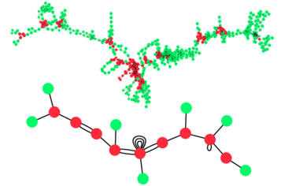

|

|
|
Abstract:
Many real-world data sets can be viewed of as noisy samples of special types of metric spaces called metric graphs. Building on the notions of correspondence and Gromov-Hausdorff distance in metric geometry, we describe a model for such data sets as an approximation of an underlying metric graph. We present a novel algorithm that takes as an input such a data set, and outputs a metric graph that is homeomorphic to the underlying metric graph and has bounded distortion of distances. We also implement the algorithm, and evaluate its performance on a variety of real world data sets.
|

![[PHOTO]](../../images/knight_small.png)